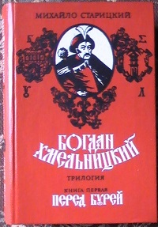
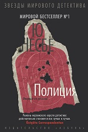

Читаю новостную ленту. Многие пишут об отключении электричества. Непривычно возвращаться в 90-е,когда думаешь,
что все это осталось в далеком прошлом. Не знаю, как жители столицы и больших городов, но вот я четко помню, как каждый
вечер зимой я учила уроки при свечке или "каганце"( это такая старая керосиновая лампа)))
Потом мы всей семьей играли в
"тыщу" и щелкали семечки. Благо, мы жили в частном доме и у нас имелась печка, поэтому было тепло и сытно. А вот бабушка
с дедушкой жили в квартире, им "повезло" меньше. Отключали воду, отопление и свет по вечерам.
Вот такими вот темными
вечерами мы в валянках(!!!) укутывались в три одеяла и слушали песни, которые бабушка с дедушкой пели порой по 4 часа подряд. И это,наверное, одни из самых теплых семейных воспоминаний)))
Понятно, что сейчас уже другие времена. Но может быть, когда в очередной раз отключат свет и сядет заряд в телефоне,
люди, живущие в
одном доме зажгут свечки и сыграют в карты, в "Монополию" или просто проведут романтический ужин))))
Тепла нам всем и света)))
Сьогодні відзначаємо День Українського козацтва!
З дитинства люблю читати історичні книги про героїчне минуле нашої країни.
Найулюбленішою є трилогія Михайла Старицького "Богдан Хмельницький" . Навчаючись в школі, я кожного літа приїжджала до своїх родичів в
Кіровоград і перечитувала цей роман, в якому розповідається про визвольну боротьбу українського народу на чолі з
Богданом Хмельницьким(1648- 1654).
З нальотом романтики перед нами постають видатні особистості того часу: Богдан Хмельницький,
Іван Богун та ін. Національний побут,колорит,традиції українського життя і Січового устрою змальовані дуже детально і образно.
З тих подій минуло більше 300 років, та боротьбя за нашу волю і незалежність продовжується. Хвала і шана всім українським козакам,
які нині відстоюють нашу свободу!!!
Вчера ночью прочитала 400 (!!!) страниц.Эта книга меня полностью захватила и подчинила себе, а финал - просто убил.
Новая книга норвежского писателя Ю Несбё "Полиция" - продолжение цикла детективов о полицейском Харри Холе.
Я очень люблю детективы скандинавских авторов,есть в них особая атмосферность и стилистика. "Полиция" - не исключение.
Зверские убийства полицейских сотрясают город, на поимку преступника
кинуты все силы, но убийца -неуловим.
Неимоверными уговорами удалось подключить к расследованию бывшего полицейского Харри Холе,который отошел от дел и стал преподавателем
в университете.
Несколько сюжетных линий и хитросплетения событий не дают расслабиться читателю ни на минуту.
Удастся ли легендарному полицейскому выиграть партию,в которой на кону будет его собственная жизнь и жизни его близких?
Ответ- в конце книги...